Data visualization with ggplot2
Last updated on 2025-11-11 | Edit this page
Estimated time: 30 minutes
Overview
Questions
- How do you make plots using R?
- How do you customize and modify plots?
Objectives
- Produce scatter plots and boxplots using
ggplot2. - Represent data variables with plot components.
- Modify the scales of plot components.
- Iteratively build and modify
ggplot2plots by adding layers. - Change the appearance of existing
ggplot2plots using premade and customized themes. - Describe what faceting is and apply faceting in
ggplot2. - Save plots as image files.
We start by loading the required packages.
ggplot2 is included in the
tidyverse package.
R
library(tidyverse)
If not still in the workspace, load the data we saved in the previous lesson.
R
surveys_complete <- read_csv("data/surveys_complete.csv")
Plotting with ggplot2
ggplot2 is a plotting package that
provides helpful commands to create complex plots from data in a data
frame. It provides a more programmatic interface for specifying what
variables to plot, how they are displayed, and general visual
properties. Therefore, we only need minimal changes if the underlying
data change or if we decide to change from a bar plot to a scatterplot.
This helps in creating publication quality plots with minimal amounts of
adjustments and tweaking.
ggplot2 refers to the name of the
package itself. When using the package we use the function
ggplot() to generate the plots, and so
references to using the function will be referred to as
ggplot() and the package as a whole as
ggplot2
ggplot graphics are built layer by layer by adding new elements. Adding layers in this fashion allows for extensive flexibility and customization of plots.
To build a ggplot, we will use the following basic template that can be used for different types of plots:
ggplot(data = <DATA>, mapping = aes(<MAPPINGS>)) + <GEOM_FUNCTION>()1: use the ggplot() function and bind the plot to a
specific data frame using the data argument.
R
ggplot(data = surveys_complete)
2: define an aesthetic mapping (using the aesthetic
(aes) function), by selecting the variables to be plotted
and specifying how to present them in the graph, e.g., as x/y positions
or characteristics such as size, shape, color, etc.
R
ggplot(data = surveys_complete, mapping = aes(x = weight, y = hindfoot_length))
3: add ‘geoms’ – graphical representations of the data in the plot
(points, lines, bars). ggplot2 offers many
different geoms; we will use some common ones today, including:
-
geom_point()for scatter plots, dot plots, etc. -
geom_boxplot()for, well, boxplots! -
geom_line()for trend lines, time series, etc.
To add a geom to the plot use + operator. Because we
have two continuous variables, let’s use geom_point()
first:
R
ggplot(data = surveys_complete, aes(x = weight, y = hindfoot_length)) +
geom_point()
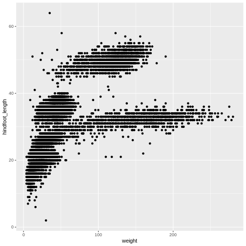
The + in the ggplot2
package is particularly useful because it allows you to modify existing
ggplot objects. This means you can easily set up plot
“templates” and conveniently explore different types of plots, so the
above plot can also be generated with code like this:
R
# Assign plot to a variable
surveys_plot <- ggplot(data = surveys_complete,
mapping = aes(x = weight, y = hindfoot_length))
# Draw the plot
surveys_plot +
geom_point()
Notes
- Anything you put in the
ggplot()function can be seen by any geom layers that you add (i.e., these are universal plot settings). This includes the x- and y-axis you set up inaes(). - You can also specify aesthetics for a given geom independently of
the aesthetics defined globally in the
ggplot()function. - The
+sign used to add layers must be placed at the end of each line containing a layer. If, instead, the+sign is added in the line before the other layer,ggplot2will not add the new layer and will return an error message. - You may notice that we sometimes reference ‘ggplot2’ and sometimes ‘ggplot’. To clarify, ‘ggplot2’ is the name of the most recent version of the package. However, any time we call the function itself, it’s just called ‘ggplot’.
- The previous version of the
ggplot2package, calledggplot, which also contained theggplot()function is now unsupported and has been removed from CRAN in order to reduce accidental installations and further confusion.
R
# This is the correct syntax for adding layers
surveys_plot +
geom_point()
# This will not add the new layer and will return an error message
surveys_plot
+ geom_point()
Challenge (optional)
Scatter plots can be useful exploratory tools for small datasets. For
data sets with large numbers of observations, such as the
surveys_complete data set, overplotting of points can be a
limitation of scatter plots. One strategy for handling such settings is
to use hexagonal binning of observations. The plot space is tessellated
into hexagons. Each hexagon is assigned a color based on the number of
observations that fall within its boundaries. To use hexagonal binning
with ggplot2, first install the R package
hexbin from CRAN:
R
install.packages("hexbin")
Then use the geom_hex() function:
R
surveys_plot +
geom_hex()
- What are the relative strengths and weaknesses of a hexagonal bin plot compared to a scatter plot? Examine the above scatter plot and compare it with the hexagonal bin plot that you created.
Building your plots iteratively
Building plots with ggplot2 is
typically an iterative process. We start by defining the dataset we’ll
use, lay out the axes, and choose a geom:
R
ggplot(data = surveys_complete, aes(x = weight, y = hindfoot_length)) +
geom_point()

Then, we start modifying this plot to extract more information from
it. For instance, we can add transparency (alpha) to avoid
overplotting:
R
ggplot(data = surveys_complete, aes(x = weight, y = hindfoot_length)) +
geom_point(alpha = 0.2)
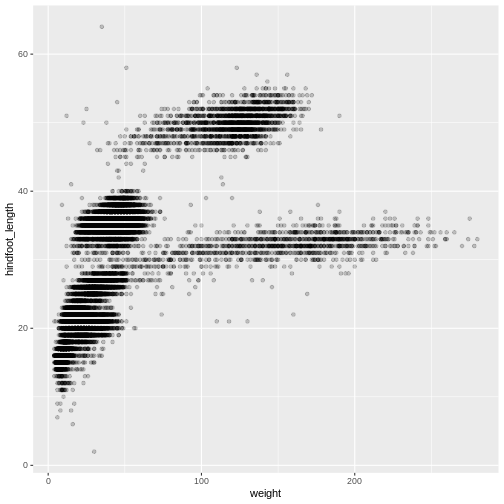
We can also add colors for all the points:
R
ggplot(data = surveys_complete, mapping = aes(x = weight, y = hindfoot_length)) +
geom_point(alpha = 0.2, color = "blue")
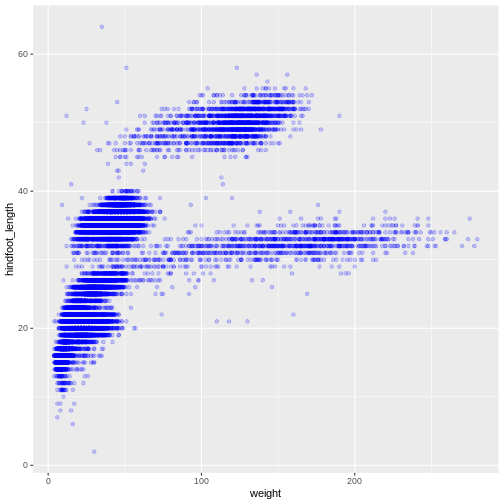
Adding another variable
Let’s try coloring our points according to the sampling plot type
(plot here refers to the physical area where rodents were sampled and
has nothing to do with making graphs). Since we’re now mapping a
variable (plot_type) to a component of the ggplot2 plot
(color), we need to put the argument inside
aes():
R
ggplot(data = surveys_complete, mapping = aes(x = weight, y = hindfoot_length)) +
geom_point(alpha = 0.2, aes(color = species_id))
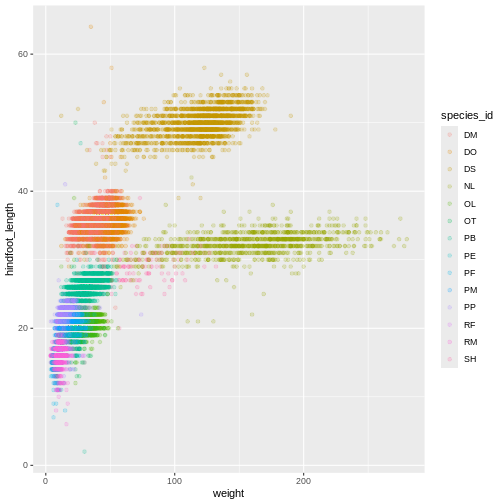
Challenge
Use what you just learned to create a scatter plot of
weight over species_id with the plot types
showing in different colors. Is this a good way to show this type of
data?
R
ggplot(data = surveys_complete,
mapping = aes(x = species_id, y = weight)) +
geom_point(aes(color = plot_type))
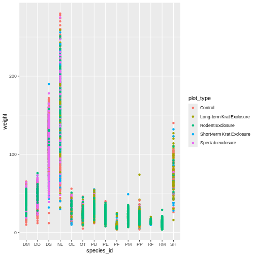
Changing scales
The default discrete color scale isn’t always ideal: it isn’t
friendly to viewers with colorblindness and it doesn’t translate well to
grayscale. However, ggplot2 comes with
quite a few other color scales, including the fantastic
viridis scales, which are designed to be colorblind and
grayscale friendly. We can change scales by adding scale_
functions to our plots:
R
ggplot(data = surveys_complete, mapping = aes(x = weight, y = hindfoot_length, color = plot_type)) +
geom_point(alpha = 0.2) +
scale_color_viridis_d()
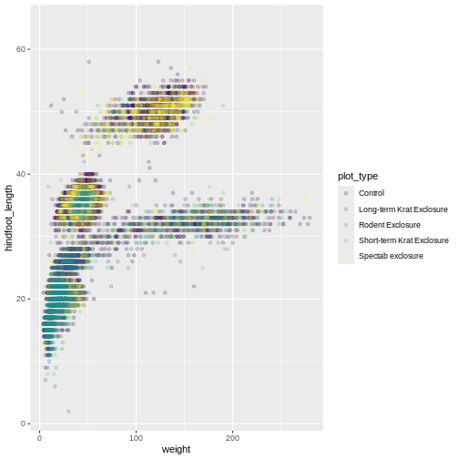
Scales don’t just apply to colors- any plot component that you put
inside aes() can be modified with scale_
functions. Just as we modified the scale used to map
plot_type to color, we can modify the way that
weight is mapped to the x axis by using the
scale_x_log10() function:
R
ggplot(data = surveys_complete, mapping = aes(x = weight, y = hindfoot_length, color = plot_type)) +
geom_point(alpha = 0.2) +
scale_x_log10()
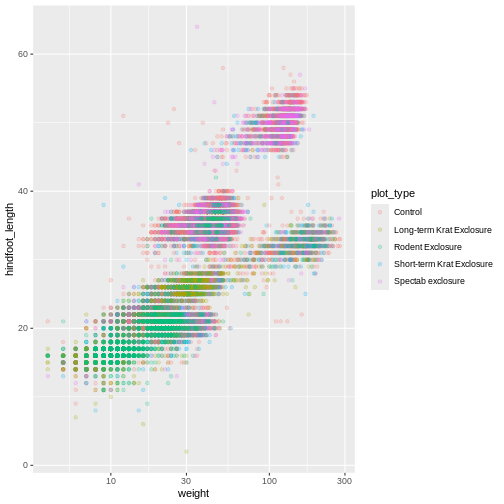
One nice thing about ggplot and the
tidyverse in general is that groups of functions that do
similar things are given similar names. Any function that modifies a
ggplot scale starts with scale_, making it
easier to search for the right function.
Boxplot
We can use boxplots to visualize the distribution of weight within each species:
R
ggplot(data = surveys_complete, mapping = aes(x = plot_type, y = hindfoot_length)) +
geom_boxplot()
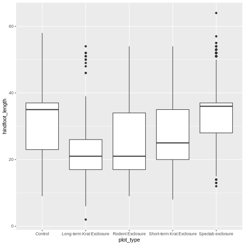
By adding points to the boxplot, we can have a better idea of the
number of measurements and of their distribution. Because the boxplot
will show the outliers by default these points will be plotted twice –
by geom_boxplot and geom_jitter. To avoid this
we must specify that no outliers should be added to the boxplot by
specifying outlier.shape = NA.
R
ggplot(data = surveys_complete, mapping = aes(x = plot_type, y = hindfoot_length)) +
geom_boxplot(outlier.shape = NA) +
geom_jitter(alpha = 0.3, aes(color = plot_type))
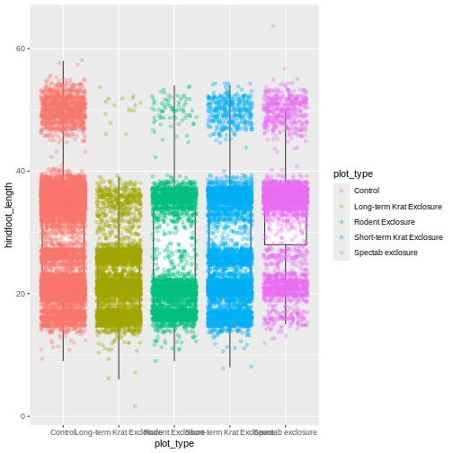
Now our points are colored according to plot_type, but
the boxplots are all the same color. One thing you might notice is that
even with alpha = 0.2, the points obscure parts of the
boxplot. This is because the geom_point() layer comes after
the geom_boxplot() layer, which means the points are
plotted on top of the boxes. To put the boxplots on top, we switch the
order of the layers:
R
ggplot(data = surveys_complete, mapping = aes(x = plot_type, y = hindfoot_length)) +
geom_jitter(aes(color = plot_type), alpha = 0.2) +
geom_boxplot(outlier.shape = NA)
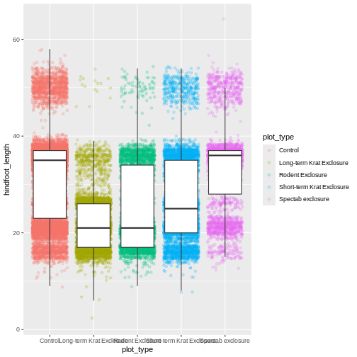
Now we have the opposite problem! The white fill of the
boxplots completely obscures some of the points. To address this
problem, we can remove the fill from the boxplots
altogether, leaving only the black lines. To do this, we set
fill to NA:
R
ggplot(data = surveys_complete, mapping = aes(x = plot_type, y = hindfoot_length)) +
geom_jitter(aes(color = plot_type), alpha = 0.2) +
geom_boxplot(outlier.shape = NA, fill = NA)
Now we can see all the raw data and our boxplots on top.
Changing themes
So far we’ve been changing the appearance of parts of our plot
related to our data and the geom_ functions, but we can
also change many of the non-data components of our plot.
At this point, we are pretty happy with the basic layout of our plot,
so we can assign it to a plot to a named
object. We do this using the assignment
arrow <-. What we are doing here is taking the
result of the code on the right side of the arrow, and assigning it to
an object whose name is on the left side of the arrow.
We will create an object called myplot. If you run the
name of the ggplot2 object, it will show the plot, just
like if you ran the code itself.
R
myplot <- ggplot(data = surveys_complete, mapping = aes(x = plot_type, y = hindfoot_length)) +
geom_jitter(aes(color = plot_type), alpha = 0.2) +
geom_boxplot(outlier.shape = NA, fill = NA)
myplot
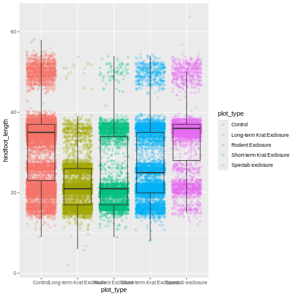
This process of assigning something to an object is
not specific to ggplot2, but rather a general feature of R.
We will be using it a lot in the rest of this lesson. We can now work
with the myplot object as if it was a block of
ggplot2 code, which means we can use + to add
new components to it.
We can change the overall appearance using theme_
functions. Let’s try a black-and-white theme by adding
theme_bw() to our plot:
R
myplot + theme_bw()
As you can see, a number of parts of the plot have changed.
theme_ functions usually control many aspects of a plot’s
appearance all at once, for the sake of convenience. To individually
change parts of a plot, we can use the theme() function,
which can take many different arguments to change things about the text,
grid lines, background color, and more. Let’s try changing the size of
the text on our axis titles. We can do this by specifying that the
axis.title should be an element_text() with
size set to 14.
R
myplot +
theme_bw() +
theme(axis.title = element_text(size = 14))
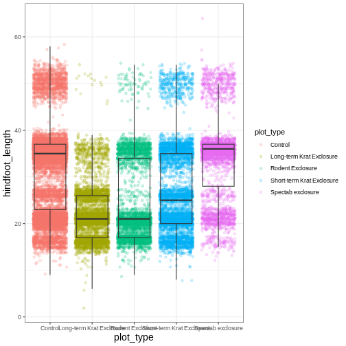
Another change we might want to make is to remove the vertical grid
lines. Since our x axis is categorical, those grid lines aren’t useful.
To do this, inside theme(), we will change the
panel.grid.major.x to an element_blank().
R
myplot +
theme_bw() +
theme(axis.title = element_text(size = 14),
panel.grid.major.x = element_blank())
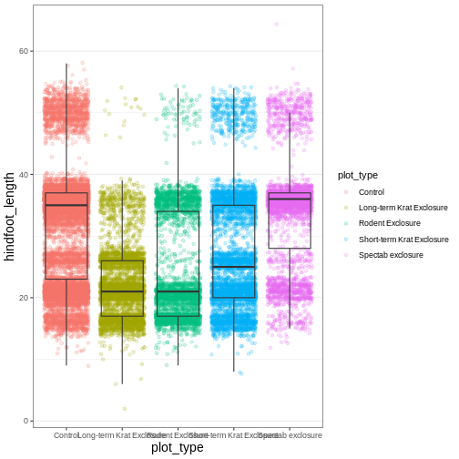
Another useful change might be to remove the color legend, since that
information is already on our x axis. For this one, we will set
legend.position to “none”.
R
myplot +
theme_bw() +
theme(axis.title = element_text(size = 14),
panel.grid.major.x = element_blank(),
legend.position = "none")
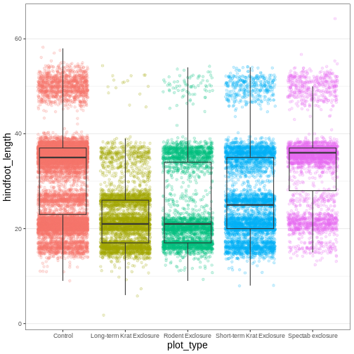
Because there are so many possible arguments to the
theme() function, it can sometimes be hard to find the
right one. Here are some tips for figuring out how to modify a plot
element:
- type out
theme(), put your cursor between the parentheses, and hit Tab to bring up a list of arguments- you can scroll through the arguments, or start typing, which will shorten the list of potential matches
- like many things in the
tidyverse, similar argument start with similar names- there are
axis,legend,panel,plot, andstriparguments
- there are
- arguments have hierarchy
-
textcontrols all text in the whole plot -
axis.titlecontrols the text for the axis titles -
axis.title.xcontrols the text for the x axis title
-
You may have noticed that we have used 3 different approaches to
getting rid of something in ggplot:
-
outlier.shape = NAto remove the outliers from our boxplot -
panel.grid.major.x = element_blank()to remove the x grid lines -
legend.position = "none"to remove our legend
Why are there so many ways to do what seems like the same thing?? This is a common frustration when working with R, or with any programming language. There are a couple reasons for it:
- Different people contribute to different packages and functions, and they may choose to do things differently.
- Code may appear to be doing the same thing, when the
details are actually quite different. The inner workings of
ggplot2are actually quite complex, since it turns out making plots is a very complicated process! Because of this, things that seem the same (removing parts of a plot), may actually be operating on very different components or stages of the final plot. - Developing packages is a highly iterative process, and sometimes
things change. However, changing too much stuff can make old code break.
Let’s say removing the legend was introduced as a feature of
ggplot2, and then a lot of time passed before someone added the feature letting you remove outliers fromgeom_boxplot(). Changing the way you remove the legend, so that it’s the same as the boxplot approach, could break all of the code written in the meantime, so developers may opt to keep the old approach in place.
Changing labels
Our plot is really shaping up now. However, we probably want to make
our axis titles nicer, and perhaps add a main title to the plot. We can
do this using the labs() function:
R
myplot +
theme_bw() +
theme(axis.title = element_text(size = 14),
legend.position = "none") +
labs(title = "Rodent size by plot type",
x = "Plot type",
y = "Hindfoot length (mm)")
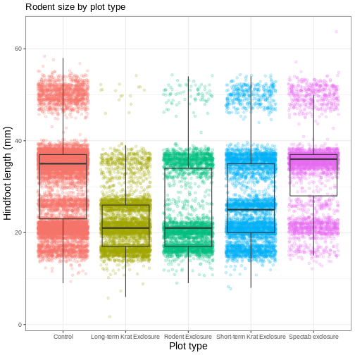
We removed our legend from this plot, but you can also change the
titles of various legends using labs(). For example,
labs(color = "Plot type") would change the title of a color
scale legend to “Plot type”.
Challenge 3: Customizing a plot
Modify the previous plot by adding a descriptive subtitle. Increase the font size of the plot title and make it bold.
Hint: “bold” is referred to as a font “face”
R
myplot +
theme_bw() +
theme(axis.title = element_text(size = 14), legend.position = "none",
plot.title = element_text(face = "bold", size = 20)) +
labs(title = "Rodent size by plot type",
subtitle = "Long-term dataset from Portal, AZ",
x = "Plot type",
y = "Hindfoot length (mm)")
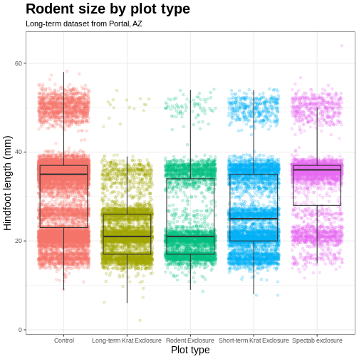
Faceting
One of the most powerful features of
ggplot is the ability to quickly split a
plot into multiple smaller plots based on a categorical variable, which
is called faceting.
So far we’ve mapped variables to the x axis, the y axis, and color, but trying to add a 4th variable becomes difficult. Changing the shape of a point might work, but only for very few categories, and even then, it can be hard to tell the differences between the shapes of small points.
Instead of cramming one more variable into a single plot, we will use
the facet_wrap() function to generate a series of smaller
plots, split out by sex. We also use ncol to
specify that we want them arranged in a single column:
R
myplot +
theme_bw() +
theme(axis.title = element_text(size = 14),
legend.position = "none",
panel.grid.major.x = element_blank()) +
labs(title = "Rodent size by plot type",
x = "Plot type",
y = "Hindfoot length (mm)",
color = "Plot type") +
facet_wrap(vars(sex), ncol = 1)
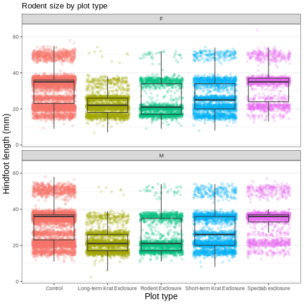
Faceting comes in handy in many scenarios. It can be useful when:
- a categorical variable has too many levels to differentiate by color (such as a dataset with 20 countries)
- your data overlap heavily, obscuring categories
- you want to show more than 3 variables at once
- you want to see each category in isolation while allowing for general comparisons between categories
Exporting plots
Once we are happy with our final plot, we can assign the whole thing
to a new object, which we can call finalplot.
R
finalplot <- myplot +
theme_bw() +
theme(axis.title = element_text(size = 14),
legend.position = "none",
panel.grid.major.x = element_blank()) +
labs(title = "Rodent size by plot type",
x = "Plot type",
y = "Hindfoot length (mm)",
color = "Plot type") +
facet_wrap(vars(sex), ncol = 1)
After this, we can run ggsave() to save our plot. The
first argument we give is the path to the file we want to save,
including the correct file extension. This code will make an image
called rodent_size_plots.jpg in the fig/
folder of our current project. We are making a .png, but
you can save .pdf, .tiff, and other file
formats. Next, we tell it the name of the plot object we want to save.
We can also specify things like the width and height of the plot in
inches.
R
ggsave(filename = "fig/rodent_size_plots.png", plot = finalplot,
height = 6, width = 8)
Challenge 4: Make your own plot
Try making your own plot! You can run
glimpse(surveys_complete) to explore variables you might
use in your new plot. Feel free to use variables we have already seen,
or some we haven’t explored yet.
Here are a couple ideas to get you started:
- make a histogram of one of the numeric variables
- try using a different color
scale_ - try changing the size of points or thickness of lines in a
geom
- the
ggplot()function initiates a plot, andgeom_functions add representations of your data - use
aes()when mapping a variable from the data to a part of the plot - use
scale_functions to modify the scales used to represent variables - use premade
theme_functions to broadly change appearance, and thetheme()function to fine-tune - start simple and build your plots iteratively